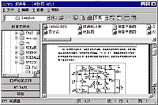

提起Quick View，相信广大用户都不会陌生，这个专业的文件查看软件以其出色的文件查看速度、众多的支持格式而深受广大用户欢迎。不过作为一个“舶来品”，Quick View有其固有的缺点，那就是它对中文的支持并不太好，很多中文文件（如WPS文件）都不能正常显示，即使能显示某些格式的中文文件如DOC文件，其显示速度也非常慢，WPS 2000阅读器就在这种情况下应运而生了。WPS 2000阅读器是一个中文化的文字浏览软件，它可快速打开WPS、Word、HTML、RTF等众多类型的文本文件，并可对其进行收藏、管理、查询、演示、打印等操作，从而极大地方便了广大国人——特别是那些没有安装WPS 2000或Word的用户——对WPS等中文文本文件进行快速浏览时的需要。
WPS 2000阅读器的界面与资源管理器有些类似，它同样分为左右两部分，左边为收藏夹管理窗口，由“所有文件夹”、“打开过的文件”、“My BABY”、“样张”等项目所组成（如图所示）。其中“所有文件夹”列出了用户计算机上的所有资源，我们可利用它找到任何欲浏览的文件；“样张”则是一个特殊项目，我们只有在安装WPS阅读器时选择了安装其附带的WPS样张，那么就可以在此处浏览WPS
2000提供的所有样张；至于“My Baby”则是用户自行建立的常用文件夹。
WPS 2000阅读器的右边为文件显示窗口。当我们在左边的收藏夹窗口中选择适当的文件夹之后，系统即会将该文件夹中的所有文件全部列表显示出来。用户只需从中选择需要浏览的文件，该文件的内容即会迅速显示在你的面前。然后我们就可以对这些文件进行阅读、查找、选择、复制、演示等操作了。另外，WPS阅读器还支持拖拽操作，用户只需在资源管理器或我的电脑中将欲浏览的文档拖拽到WPS阅读器中即可实现快速查看的目的。
WPS 2000阅读器还向用户提供了文件的打印预览及打印功能。我们在打开某个文件后只需单击快捷工具栏上的“打印预览”按钮即可快速查看文档的打印效果；而执行“文件”菜单中的“打印机设置”命令则可对打印状态进行必要的设置。
当然，WPS 2000阅读器也并非十全十美，它还有两点明显的不足。其一支持的文件种类太少，仅仅支持文本文档，而对其它的诸如图形、声音等文件都不支持，因而应用范围比较狭窄；其二不支持鼠标右键功能，我们不能通过在文件窗口中右击有关文件来实现快速调用WPS阅读器进行浏览的目的，这些都有待改进。
尽管如此，WPS阅读器的功能仍然是不容置疑的，有兴趣的读者可到金山公司的网页http:∥wwwwps2000com；http:∥wwwjoyocom或http:∥wwwkingsoftnet下载一个试试，它可是免费的哦！
(湖北 荆中院) |